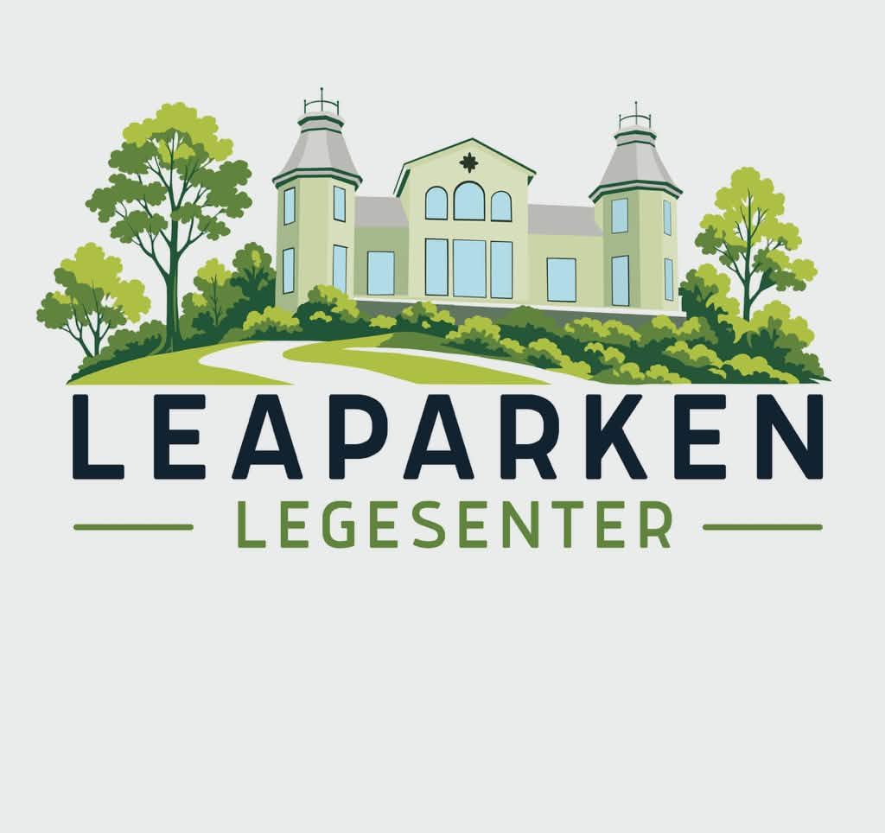

Akutt syk?
Ring oss på 55 27 71 70, legevaktsentralen på 116 117, eller nødsentralen på 113.
Ring – ikke skriv!
Vi har flyttet
Vi heter nå Leaparken Legesenter.
Rett ved bybanestopp og med parkeringsmulighet i garasje.

Ring oss på 55 27 71 70, legevaktsentralen på 116 117, eller nødsentralen på 113.
Ring – ikke skriv!
55 27 71 70
Telefonen besvares kl. 09.00–11.00 og 12.30–13.30.
Vi anbefaler helsenorge.no for timebestilling, reseptfornyelse og meldinger til sekretær. Det sparer deg for telefonkø.
Vennligst bekreft full åpnings- og stengetid.
Elin Hestvik, Dag J. Hanson Brochmann, Thomas Grindevoll, Thomas Damlien Eide og Jelena Vlku-Danjec.
Hilde Gro Endestad, Beathe Bussesund Bjørkehaug og Theres-Mari Limevåg.
E-konsultasjon er tilgjengelig og besvares innen 5 virkedager av lege. Merk at e-konsultasjon ikke kan benyttes ved behov for sykmelding – dette krever fysisk oppmøte hos legen.
Avbestilling må skje senest 24 timer før avtalt time, ellers vil timen bli belastet. Avbestilling gjøres via telefon eller melding på helsenorge.no.
Sykmelding krever fysisk oppmøte til undersøkelse hos legen. Det er ikke mulig å få sykmelding via e-konsultasjon. Trenger du sykmelding, bestill time så snart som mulig – tilbakedatering er som hovedregel ikke tillatt.
Ønsker du å bytte til oss som fastlege? Bytte av fastlege gjøres enkelt via helsenorge.no. Etter at byttet er registrert, ber vi deg ta kontakt med ditt tidligere legekontor for å få overført journalen din til oss.